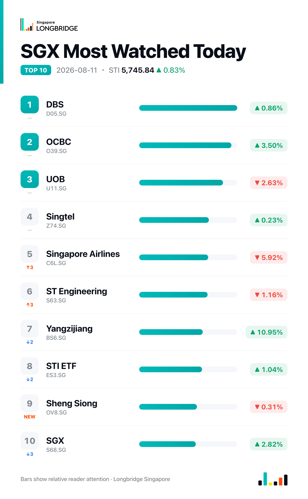

STI Adds 0.83% to 5,745.84 as Breadth Turns Positive; Yangzijiang Surges, SIA Slides 5.92%
The Straits Times Index closed at 5,745.84 on Tuesday, up 47.41 points, or 0.83%, after swinging between an intraday low of 5,667.05 and a high of 5,774.21. The advance was broad: 17 of the benchmark's 30 constituents closed higher against eight decliners and five unchanged, a marked change from the narrower, earnings-driven rallies of recent sessions.
Gains were underpinned by a regional rally in bank shares — one report described Asia-Pacific bank stocks as posting their strongest surge in decades — which lifted OCBC and extended the momentum from last week's record first-half local-bank earnings. Yangzijiang Shipbuilding continued to climb after its own record results, while Singapore Exchange added to gains on fresh guidance from its finance chief. Singapore Airlines was the session's outlier, falling sharply as it remained under pressure from last week's quarterly loss.
Session Movers
Yangzijiang Shipbuilding (BS6.SG, +10.95%) was the session's best performer, extending its rally after reporting first-half net profit up 28.4% year-on-year to RMB5.37 billion on revenue up 36.2% to RMB17.53 billion, with delivery slots through 2029 nearly full and management targeting US$4.5 billion in new orders this year. Even after Tuesday's jump, the S$4.66 close leaves only about 5% of headroom to the consensus Buy target of S$4.90, set Monday.
OCBC (O39.SG, +3.5%) advanced after DBS analyst Lim Rui Wen reiterated a Buy rating with a S$36.60 target — above the stock's own Moderate Buy consensus target of S$29.68 — and as the bank extended its mobile precious-metals platform to platinum and palladium for retail clients. The moves built on last week's record first-half profit and 15% dividend increase.
Singapore Exchange (S68.SG, +2.82%) rose after its chief financial officer said Tuesday that stock and foreign-exchange trading activity should support comprehensive growth in fiscal 2027, extending last week's record full-year net profit and the chief executive's comments on the strongest IPO pipeline in 18 months. The stock carries a consensus Hold rating with a target price below Tuesday's close.
Singapore Airlines (C6L.SG, -5.92%) was the index's sharpest decliner, with no fresh company news Tuesday. The stock remains under pressure after its record-revenue but loss-making first quarter, reported August 4, marked its first quarterly net loss since the pandemic. Even after the slide, the S$7.15 close sits just above the consensus Hold target of S$7.05, set July 31.

One point worth noting
For the first time in several sessions, the STI's breadth matched its direction. Tuesday's 17 advancers against eight decliners and five unchanged is a sharp reversal from Thursday's eight advancers against 20 decliners on a 1.04% gain and Friday's 11 against 18 on a 0.94% gain — sessions when gains were concentrated in a handful of large-cap earnings movers. Tuesday's advance also broadened beyond the banks, with shipbuilding and the exchange operator itself among the leaders.
This recap is for informational purposes only and does not constitute investment advice.